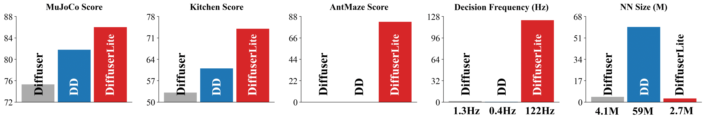

Diffusion planning has been recognized as an effective decision-making paradigm in various domains. The capability of generating high-quality long-horizon trajectories makes it a promising research direction. However, existing diffusion planning methods suffer from low decision-making frequencies due to the expensive iterative sampling cost. To alleviate this, we introduce DiffuserLite, a super fast and lightweight diffusion planning framework, which employs a planning refinement process (PRP) to generate coarse-to-fine-grained trajectories, significantly reducing the modeling of redundant information and leading to notable increases in decision-making frequency. Our experimental results demonstrate that DiffuserLite achieves a decision-making frequency of 122.2Hz (112.7x faster than predominant frameworks) and reaches state-of-the-art performance on D4RL, Robomimic, and FinRL benchmarks. In addition, DiffuserLite can also serve as a flexible plugin to increase the decision-making frequency of other diffusion planning algorithms, providing a structural design reference for future works.
The core motivation behind DiffuserLite is to increase the decision frequency of diffusion planning algorithms. While predominant works demonstrate impressive decision-making performance, their extremely low decision frequency poses challenges for real-world applications. The fastest version of DiffuserLite achieves a decision frequency increase of nearly 112.7 times. Below, we demonstrate this using a real-time Franka kitchen task, where we consider only the planning time of the algorithm as the update interval for the robot arm's state. It can be observed that the three versions of DiffuserLite (left three videos) exhibit significantly faster decision frequencies, meeting real-world requirements, while Diffuser and DD, on the other hand, fall short (right two videos).
Figure above shows the detailed runtime and performance comparison in Franka Kitchen. The y-axis represents the number of completed tasks (maximum of 4), and the x-axis represents the required wall-clock time. Task success rates are presented in colored circles. All results are averaged over 250 rollouts. DiffuserLite demonstrates significant advantages in both wallclock time and success rate.
Our insight is that the low decision frequency is primarily attributed to modeling a denoising process for a long-horizon trajectory distribution, which requires a heavy neural network backbone and multiple forward passes. In practice, we find that disparities between plans increase as the horizon grows, leading to poor consistency between plans in consecutive steps. Besides, agents often struggle to reach the planned distant state. These facts argue that while long-horizon planning helps improve foresight, it introduces redundant information in distinct parts. The details in closer parts are more crucial. Ignoring the modeling of these redundant parts in the diffusion planning process will significantly reduce the complexity of the trajectory distribution to be fitted, making it possible to build a fast and lightweight diffusion planning framework. Motivated by these insights, we propose to build a plan refinement process (PRP) to speed up diffusion planning. First, we perform "rough" planning, where jumpy planning is executed, only considering the states at intervals that are far apart and ignoring other individual states. Then, we refine a small portion of the plan, focusing on the steps closer to the current state. By doing so, we fill in the execution details between two states far apart, gradually refining the plan to the step level. This approach has three advantages: 1) It reduces the length of the sequences generated by the diffusion model, simplifying the complexity of the probability distribution to be fitted. 2) It significantly reduces the search space of plans, making it easier for the planner to find well-performed trajectories. 3) Since only the first action of each step is executed, rough planning of steps further away causes no noticeable performance drop.
Runtime Cost (RQ1) The primary objective of DiffuserLite is to increase the decision-making frequency. Therefore, we first test its wall-clock runtime cost (time consumption for one action inference) under three different backbones, compared to Diffuser, DD, and HDMI, to determine the extent of the advantage gained. We present the test results in the table above, which shows that the runtime cost of DiffuserLite with D, R1, and R2 backbones is only 1.23%, 0.89%, and 0.51% of the average runtime cost of Diffuser and DD, respectively. The remarkable improvement in decision-making frequency does not harm its performance. These improvements are attributed to ignoring redundant information in PRP, which reduces the complexity of the distribution that the backbone generative model needs to fit, allowing us to employ a light neural network backbone and use fewer sampling steps to conduct perfect-enough planning. Its success in FrankaKitchen, a realistic robot manipulation scenario, also reflects its potential application in real-world settings.
Performance (RQ2) DiffuserLite is then evaluated on various popular domains in D4RL, Robomimic, and FinRL, to test how well it can maintain the performance when significantly increasing the decision-making frequency. All results are presented in tables above. Results in D4RL table show significant performance improvements across all benchmarks with high decision-making frequency. This advantage is particularly pronounced in FrankaKitchen and Antmaze environments, indicating that the structure of DiffuserLite enables more accurate and efficient planning in long-horizon tasks, thus yielding greater benefits. In the MuJoCo environments, more notable advantages are shown on sub-optimal datasets, i.e., "medium" and "medium-replay" datasets. This sub-optimal advantage can be attributed to the PRP planning structure, which does not require one-shot generation of a consistent long trajectory, but explicitly demands stitching. This allows for better utilization of high-quality segments in low-quality datasets, leading to improved performance. Results in Robomimic and FinRL table are obtained by models trained on real-world datasets, and demonstrate that DiffuserLite continues to exhibit its superiority in these real-world tasks, achieving performance comparable to SOTA algorithms. This illustrates the potential application of DiffuserLite in real-world scenarios.
Flexible Plugin (RQ3) To test the capability of DiffuserLite as a flexible plugin to support other diffusion planning algorithms, Aligndiff is selected as a non-reward-maximizing algorithm backbone, and integrated with DiffuserLite plugin, referred to as AlignDiff-Lite. AlignDiff aims to customize the agent's behavior to align with human preferences and introduces an MAE area metric to measure this alignment capability, where a larger value indicates a stronger alignment capability. The comparison of AlignDiff and AlignDiff-Lite is presented in table above, showing that AlignDiff-Lite achieves a 560% improvement in decision-making frequency compared to AlignDiff, while only experiencing a small performance drop of 3.2%. This result demonstrates the potential of DiffuserLite serving as a plugin to accelerate diffusion planning across various domains.
Ablations (RQ4)
How to choose the number of planning levels L and the temporal horizons H_l?
We compared the performance of DiffuserLite with 2/3/4 planning levels and with four different temporal horizon designs,
and reported the results in Table 6. The list in the first row represents the temporal horizon for each level,
with larger values on the left indicating more planning at a coarser granularity,
while larger values on the right indicate more planning at a finer granularity.
For planning level design, results show a performance drop with 2 planning levels,
particularly in Antmaze, and a consistently excellent performance with 3 or 4 planning levels.
This suggests that for longer-horizon tasks, it is advisable to design more planning levels.
For temporal horizon design, results show a performance drop when the temporal horizon of one level becomes excessively long.
This suggests the temporal horizon of each level is supposed to be similar and stay close.
We summarized and presented a design choice list in Appendix C in the paper.
Has the last level (short horizon) of DiffuserLite already performed well in decision making?
This is equivalent to the direct use of the shorter planning horizon.
If it is true, key points generated by former levels may not have an impact, making PRP meaningless.
To address this question, we conduct tests using a one-level DiffuserLite with the same temporal horizon as the last level of the default model,
referred to as "Lite w/ only last level". The results are presented in Table 7, column 2.
The notable performance drop demonstrates the importance of a long-enough planning horizon.
Can decision-making be effectively accomplished without progressive refinement planning (PRP)?
To address this question, we conduct tests using a one-level DiffuserLite with the same temporal horizon as the default model,
referred to as Lite w/o PRP. This model only supports one-shot generation at the inference phase.
We also test a "smaller" DD with the same network parameters and sampling steps as DiffuserLite,
to verify whether one can speed up DD by simply reducing the parameters, referred to as DD-small.
The results are presented in Table 7, column 3-4. The large standard deviation and the significant
performance drop provide strong evidence for the limitations of one-shot generation planning,
having difficulties in modeling the distribution of detailed long-horizon trajectories.
However, DiffuserLite can maintain high performance with fast decision-making frequency due to its lite architecture and simplified fitted distribution.
More ablations. We conducted further ablation studies on model size, sampling steps, planning horizon, with or without value condition,
and visual comparison to better elucidate DiffuserLite. Please refer to the Appendix in our paper for these sections.